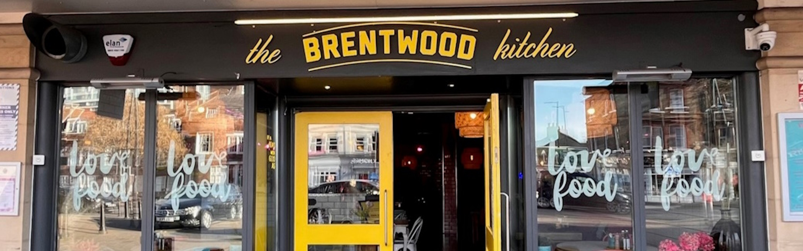

Work Experience
Independent Online Tutor
My work as an online tutor for GCSE and A-Level Computer Science has improved my life in so many ways, and has helped me grow into a more confident and independent person. I have been working as a tutor for over a year now, and have had the opportunity to work with many students, helping them to achieve their goals. I have had many great reviews, which is a testament to the quality of the lessons that I teach. Despite my lessons being advertised as one hour in length, it's very common for me to get sucked into what I am discussing with my students, and to have lessons last anywhere from 70 minutes to 2 hours! I have had the opportunity to work with students from all over the world, including the UK, Germany, Saudi Arabia and the US. This has given me a great opportunity to learn and grow myself, as seeing the perspective of all of my students has helped me to not only understand the subject better for myself, but also understand it in a way that I can explain it to others.
My online presence is managed entirely by myself, which includes advertisements, my website (which is currently just a linktree!), communication with parents and managing payments. It took a lot of trial and errors to find a system that worked well for me, and I use a variety of softwares, such as Google Meets, Calendly, and Miro to help me manage my lessons.
I have quickly realised that not on is Computer Science a real passion of mine, but also having the opportunity to share my joy and passion with students who may not have seen the joys of the subject yet. A lot of my students say that my energy in my lessons has rubbed off on them, and that they are now enjoying the subject more than they did before. This is a great feeling for me, and is one of the main reasons I love tutoring so much!
Tesco
What a beautiful building! Yes, this is the exact Tesco that I was a Customer Assistant at for a year. I worked here during my time at Sixth Form, and it was a great job to have that was flexible around my studies. I was able to work weekends, as well as flexibly during the week. I was able to work on as low as 9 contracted hours, which took places originally from 0600-1500 on a Saturday, but later changed to 1100-2000 on a Sunday. I was also able to pick up extra shifts during the week, which I did frequently. Originally, I was responsible for stocking fresh produce, but after a few months I was moved to the checkouts, where I was responsible for scanning and packing customers shopping. This was a great experience for me as it taught me how to work in a large team, as well as taught me further about workplace relationships, and how to provide a great customer experience.
Fete Grays Yard
Looking for a new job to sustain my spending habits on new PC components, I found a job at a local cafe in Chelmsford, where I lived. This provided a much easier commute as it was a simple walk to work into the town center. I worked here for about 9 months, before they eventually closed to move location. In this time, I was doing lots of the jobs I was doing at Brentwood Kitchen, such as running, cleaning tables and taking orders. I was also given the new responsibility of making drinks, which started of as simple smoothies and frappes, but grew into teas and coffees, and during evening shifts I was even making cocktails! This was a great experience for me as it taught me how to work in a team, as well as how to work under pressure.
Brentwood Kitchen
I started off my working life at 'Brentwood Kitchen', a busy contemporary restaurant in Brentwood, Essex. I worked here for a few months, unfortuntely just before the second lockdown which saw the workforce cut, and therefore saw me lose my first job only half a year after I had first started! I was responsible for cleaning tables, as well as running orders between the kitchen and the tables. After some of the managers realised I got on very well with customers, they decided to put me on taking orders, which was a great experience for me as it taught me how to deal with customers and how to work under pressure. This was my first time working in a formal environment and therefore I took a lot from my time here.
Back to Home